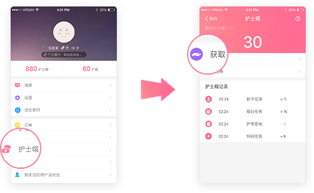

如何获得护士帽？
您在医护之家每一个动作都有可能获得护士帽哦，
如每日签到、发布动态、点赞、分
享动态等等，根据任务类型不同，获得的护士帽数量也不尽相同。
您可以在“我的”——“护士帽”——“获取”中随时查看自己的任务。

护士帽和护盾可在医护之家平台兑换历年真题、模
拟考试、随机测试、章节练习、视频课程等各种福
利
您在医护之家每一个动作都有可能获得护士帽哦，
如每日签到、发布动态、点赞、分
享动态等等，根据任务类型不同，获得的护士帽数量也不尽相同。
您可以在“我的”——“护士帽”——“获取”中随时查看自己的任务。